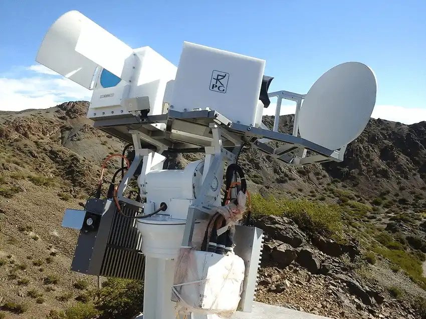

POEMAS
Solar radio telescope operating at millimeter wavelengths, designed for high temporal resolution observations of solar flares and fast transient events.
Frequencies:
45 / 90 GHz
Type:
Solar radio time series
Resolution:
10ms
Available periods:
2011 (Nov–Dec);
2012 and 2013 (Jan–Dec);
2019 (Jun–Jul, Sep–Dec);
2020 (Jan–Mar, Sep–Nov);
2024 (Apr–Nov)
2012 and 2013 (Jan–Dec);
2019 (Jun–Jul, Sep–Dec);
2020 (Jan–Mar, Sep–Nov);
2024 (Apr–Nov)
Note:
Data coverage is not continuous due to instrument maintenance and operational downtime.
Location:
CASLEO, Argentina